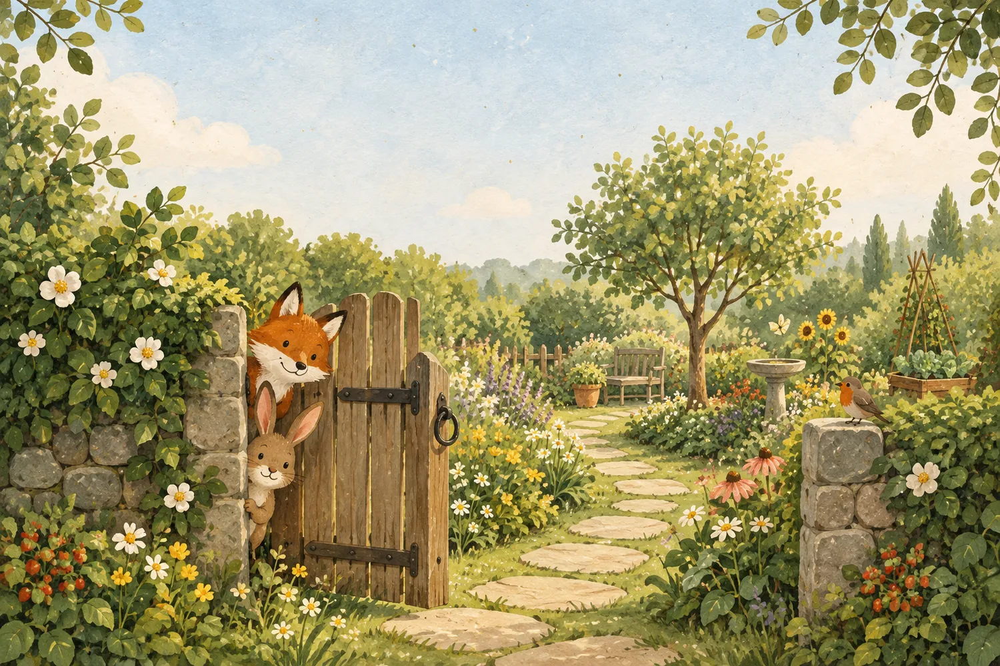

My Learning Ecology
Barron (2006) describes a learning ecology as “the set of contexts found in physical or virtual spaces that provide opportunities for learning” (p. 195). In this activity you will map the ecology behind something you learned well, then imagine learning it again today with AI at hand, and finally think about your own learners. You will answer one question at a time, and your map will grow as you go. There are no right answers, and you can skip anything you would rather not share.
Nothing you type leaves your browser. Your answers are saved only on this device.
Your browser is not letting this page save. Your answers will be lost if you close it, so please use the report to keep a copy.
Here are your two gardens
Each piece you marked “AI could replace this” has folded into the glass greenhouse, and the paths that ran through it have faded. These are your own judgments, not a score. People in the same class often see this very differently, and that is a good thing to talk about.
Your share card and report
If nothing downloads, press and hold the picture (or right-click it) to save or copy it.
In your breakout room, you might each share your card and talk about what AI would leave out of your maps.
My report
Everything you answered, with the reasons you gave in Part B. You can share your screen, copy it, or save it as a text file.